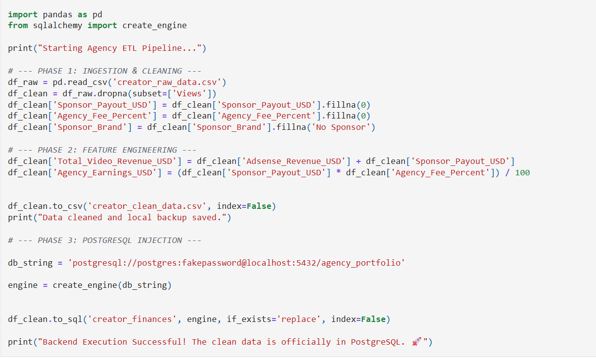
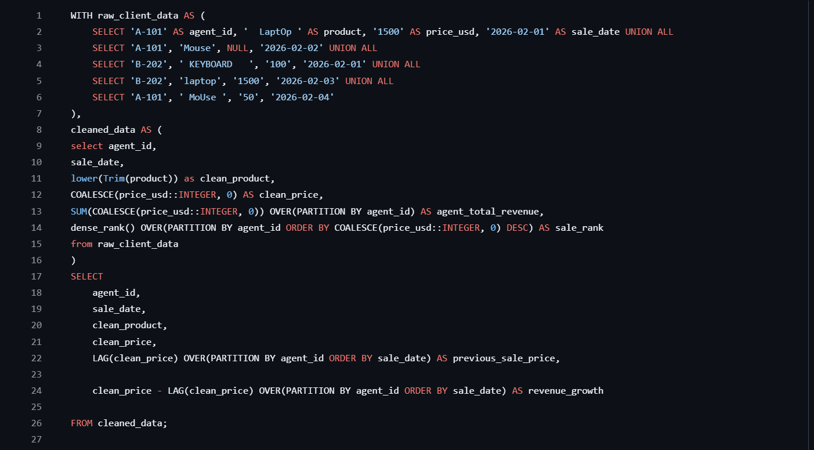
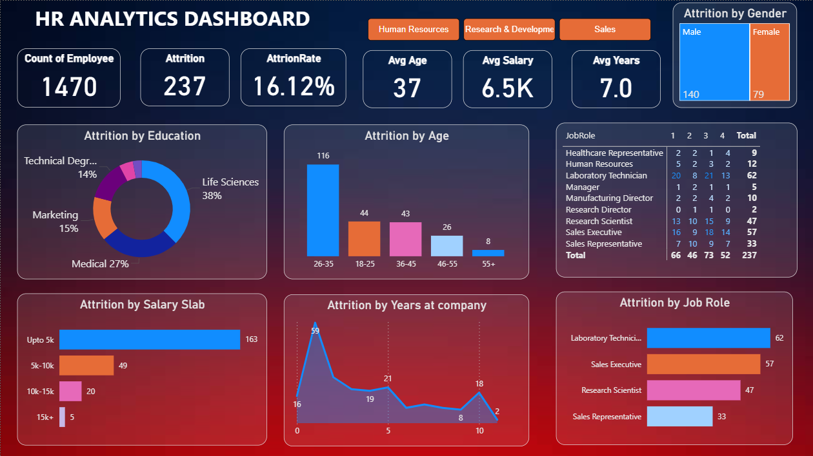

Data Analyst who turns messy, manual processes into clean automated pipelines — and raw numbers into dashboards that actually get used.
I'm Veeru Shakya — a 21-year-old Data Analyst from Gurugram, currently pursuing my BBA while building a career in data full-time.
I got into data analytics with a clear goal: learn a skill that's genuinely in demand and build something real with it. What I didn't expect was how much I'd enjoy the process — especially automating the repetitive stuff. There's something deeply satisfying about replacing hours of manual work with a pipeline that just runs.
My projects reflect that — from ETL pipelines that clean and inject creator data into PostgreSQL, to Power BI dashboards that give stakeholders answers at a glance. I'm not locked into one industry. Good data problems exist everywhere, and I'm here for all of them.

End-to-end Python ETL pipeline that cleans YouTube creator financial data and injects it into a secure PostgreSQL database — automating what was once a manual, error-prone process.
Advanced PostgreSQL analytics for a YouTube creator agency — extracting actionable business intelligence on audience RPM, recurring sponsor ROI, and month-over-month revenue growth.

A PostgreSQL data pipeline that cleans unstructured e-commerce sales data and calculates day-over-day revenue growth using Window Functions — turning raw transactions into clear growth signals.

Power BI HR dashboard diagnosing a 16% employee attrition rate across 1,470 records — identifying flight risks by salary, job role, and tenure to give HR leadership a clear retention roadmap.
Interactive Power BI dashboard analyzing e-commerce revenue, featuring 15-day sales forecasting, supply chain KPIs, and customer segmentation — giving stakeholders a live pulse on business performance.
YouTube creator agencies manage revenue across dozens of creators — Adsense payouts, sponsor deals, agency fees. When all of that lives in raw CSVs, someone has to manually clean and consolidate it every single month.
The data was messy: missing revenue values, inconsistent formatting, null sponsor entries, duplicate rows. It wasn't analysis-ready — it needed hours of manual work before anyone could even ask a business question.
The goal was simple: eliminate that manual work entirely and deliver a clean, structured dataset straight into a database where it can be queried immediately.
Before writing a single line, I mapped out the three phases the pipeline needed to handle:
The core logic across all three phases looked like this:
The feature engineering step was the most valuable addition — computing Total_Video_Revenue_USD and Agency_Earnings_USD meant downstream queries didn't need to recalculate these every time.
if_exists='replace' meant the pipeline could be safely re-run without duplicating data.The pipeline replaced what was previously a manual monthly process. Data now lands in PostgreSQL clean, typed correctly, and ready for any downstream query or dashboard to consume immediately.
The technical skills — Pandas, SQLAlchemy, null handling — were learnable. The bigger lesson was about thinking like an engineer before thinking like an analyst.
A good pipeline isn't just one that works once. It's one that works every time, fails clearly when something goes wrong, and doesn't need someone to babysit it. That mindset shift — from "does this produce the right answer?" to "is this production-ready?" — is what this project taught me most.
Full resume with detailed project breakdowns, technical skills, and contact info — ready to share with hiring managers.
Download Resume ↓Data Analyst with hands-on experience building end-to-end SQL pipelines, Python ETL systems, and Power BI dashboards that turn messy data into clear business decisions. Combines technical depth with commercial thinking — backed by a BBA — to bridge the gap between raw data and real ROI.
Open to data analyst roles, freelance projects, and interesting collaborations.
veerubusiness77@gmail.com